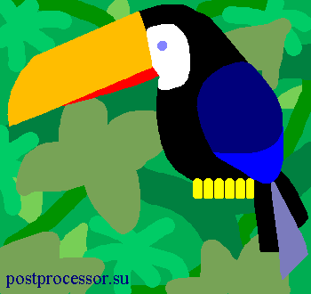
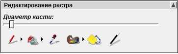
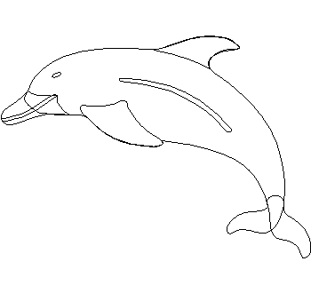
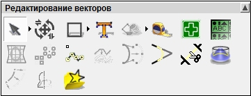
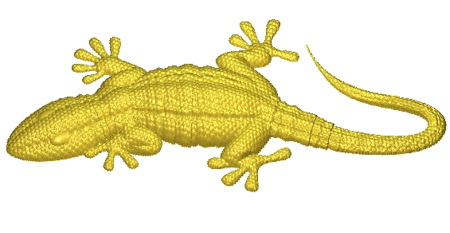
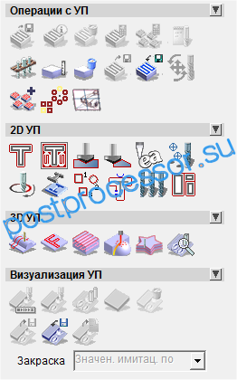
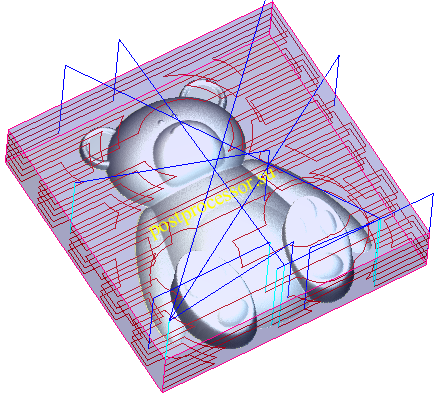
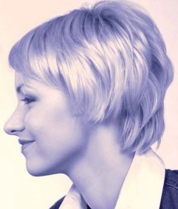
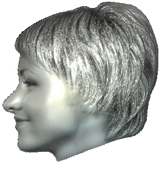

Кочубей Алексей Кочубей Алексей

|
 |
|
Анализ программы
ArtCAM - пакет для моделирования и обработки рельефов, пространственных и художест-венных форм. Следует особенно отметить, что ArtCAM - это самая настоящая CAD/CAM система. Она совмещает
набор инструментов для моделирования и функции расчета УП. Широко
применяется в различных областях связанных с обработкой "свободных" форм, таких как деревообработка, гравировка, ювелирная, рекламная и другие. Пакет прост в изучении и применении.
Существует несколько версий ArtCAM с разным объемом функциональных возможностей:
ArtCAM Express - версия ограничена работой с векторами, растровыми изображениями, воз-можностью импортировать и обрабатывать рельефы, отсутствуют многие опции по созданию рельефа;
ArtCAM Insignia - версия для создания и обработки изделий по набору векторов. Применяет-ся для изготовления табличек, изделий с плоскими контурными элементами. Для экономии материала возможно применение модуля раскладки элементов на листе (нестинг).
ArtCAM JewelSmith - версия для ювелиров, учитывает особенности работы и терминологию изготовления данных изделий. Содержит специальные мастера, которые позволяют модели-ровать такие элементы как касты, шинка и т.д.;
ArtCAM Pro - основная версия пакета без ограничений. Имеет полный функционал по работе с векторами и растровыми изображениями, постпроением рельефа и его редактированием. Доступны все опции по расчету траекторий обработки.
В настоящее время ArtCAM - наиболее популярная программа для создания художествен-ных изделий, конкурирующие продукты далеко позади.
Процесс построения рельфов начинается в окне 2D, когда дизайнер создает или импортиру-ет два типа плоских объектов: растровое изображение (рисунок) или вектора. Оба типа объ-ектов имеют свой набор функций в виде отдельных разделов в проводнике.


На рисунке растровое изображение тукана, снизу - опции работы с цветом.
Пользователь может конвертировать растр в вектор (векторизация) и наоборот, а также им-портировать данные полученные в других программах (gif, jpg, bmp, tif, dxf, eps). Пользова-тель может сохранять созданные объекты в библиотеке, а также пользоваться стандартной библиотекой векторов.


На рисунке векторное изображение дельфина, снизу - опции работы с векторами.
На основе набора данных в плоскости строится
объемная модель изделия
(рельеф). Это происходит за счет придания объема по оси Z или с помощью операций вытя-гивания, вращения и других схожих с твердотельным моделированием. При построении до-пускается использовать несколько слоев, далее комбинировать с ними получая нужный рельеф. Рельеф - это облако точек c распределением по высоте внутри плоского сегмента.

Расчет управляющих программ
Осуществляется на закладке УП. В качестве объекта расчета может использоваться объем-ная модель или вектора.
Набор стратегий для этих
объектов разделен на 2D и 3D обработку.
Среди стратегий можно выделить следующие:
- черновая выборка растром и смещением;
- доработка;
- чистовая растровая обработка;
- обрезка по профилю;
- гравировка по векторам;
- гравировка по средней линии;


Если необходимо обработать изделие с размерами большими чем пределы перемещения станка, то функция разделения на зоны обработки позволит легко решит эту проблему. Функции симулятора дают возможность произвести имитацию обработки. Однако функцио-нал и возможности несколько слабее чем в PowerMILL.
Maстер лица
Позволяет по фотографии профиля человеческого лица автоматически построить рельеф. В ArtCAM функционал представлен в виде пошагового мастера. Достаточно, выделить контур лица, указать ключевые точки, определяющие высоту высоких и низких участков. Специально разработанный алгоритм ArtCAM построит реалистичную трехмерную модель лица. На рисунках ниже представлены исходные данные (слева) и готовый рельеф (справа).


Как уже отмечалось выше, ArtCAM прост в работе и изучении и не требует от обучающего-ся специального образования. На данной странице мы предлагаем учебный курс для тех, кто хочет научиться
строить рельефы и производить их обработку самостоятельно.
Постпроцессор ArtCAM
Постпроцессор ArtCAM имеет текстовый формат конфигурационного файла постпроцессора, схожий с Ductpost, но отличный от него. Станочное оборудование для гравировки и обработки рельефов оснащается упрощенной системой ЧПУ по сравнению с металлорежущим оборудованием, поэтому большинство УП имеют схожий формат (координаты XYZ).
Ниже фрагмент УП для станка Roland:
! 1;Z 0,0,12510
V 64;F 64
V 64;F 64
Z 3013,3425,12510
V 4;F 4
Z 3013,3425,0
V 11;F 11
Конфигурационные файлы (постпроцессор) ArtCAM имеют расширение .con. Delcam разра-ботал стандартные постпроцессоры для всех основных систем ЧПУ, поэтому при настройке постпроцессора с более специфическими функциями, рекомендуется за основу взять уже имеющийся.
Существует два типа систем ЧПУ, для которых приходится настраивать постпроцессор в ArtCAM:
1. Имеют формат данных с плавающей точкой
X 12.345 Y 7.120 Z 0.563
2. Формат с целочисленными данными, цена импулься 0.01, 0.001 мм
X 12345 Y 7120 Z563
Для настройки постпроцессора под первый тип лучше использовать постпроцессор с нали-чием G кодов (gcode_inch.con или gcode_mm.con или heiden.con.)
Второй тип имеет формат HPGL, здесь лучше подойдет постпроцессор roland.con.
Это даст хорошую основу для дальнейшей настройки.
|
|